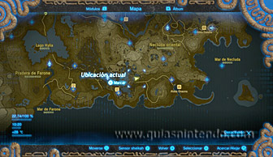
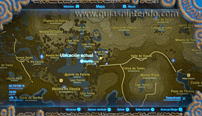
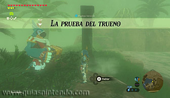
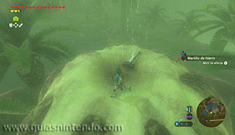
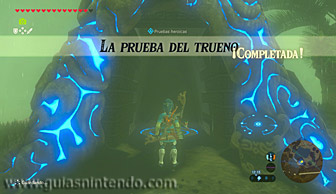
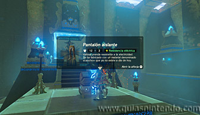

Este santuario se encuentra en la región de la torre de Farone, aunque para encontrarlo primero debes superar una Prueba heroica (La prueba del trueno) para que la entrada se desbloquee. El santuario lo encuentras al este de dicha torre, en la orilla sur del lago Raloc.

A orillas de dicho lago encontrarás a un personaje llamado Nyel tocando el acordeón. Habla con él para activar la prueba heroica "La prueba del trueno" y luego sube a lo alto de un montículo que hay al sur del lago. Una vez allí, deja en lo alto algo metálico a lo que no le tengas mucho aprecio (una espada, arco o escudo de poco valor) y apártate un poco, y luego espera a que dicho objeto atraiga a un rayo de la tormenta que siempre hay por esa zona. De esa manera, destruirás el montículo, completarás la prueba heroica y harás parecer la entrada al santuario.

Dentro solo verás un cofre y el altar. Dentro del cofre puedes coger un pantalón aislante. Cuando llegues al altar podrás examinarlo para obtener un símbolo de valía.
